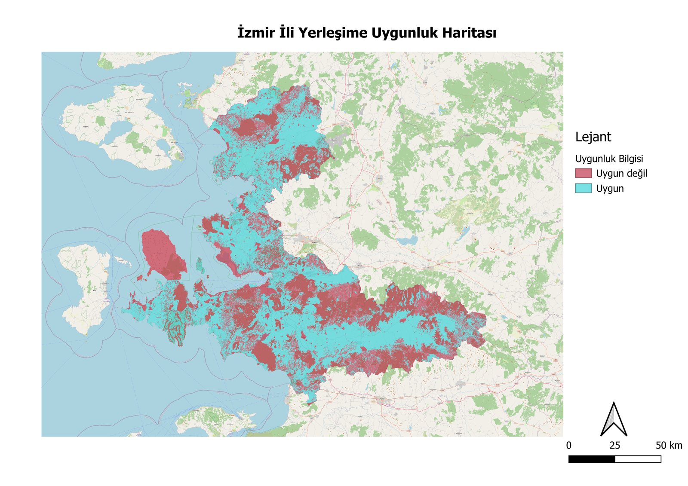

İzmir İli Yerleşime Uygunluk Analizi
İzmir ilinde yerleşime uygun ve uygun olmayan alanları belirleyen kısıt tabanlı raster analizi.
- Sayısal yükseklik modelinden eğim üretimi
- Orman, su ve korunan alanların kısıt olarak çıkarılması
- TUREF / TM27 projeksiyonunda çalışma
QGISDEMRaster hesapTUREF TM27